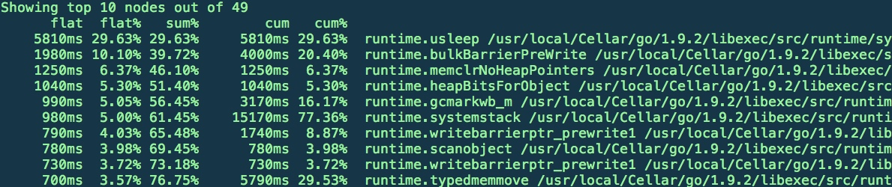
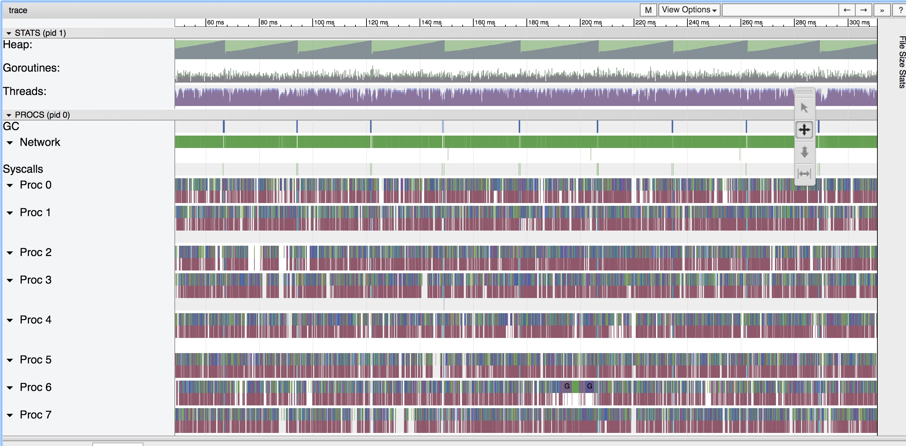
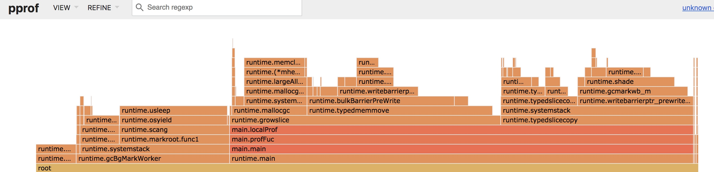

Go 的一些调试技巧
说起 Go 的优点，大家的第一反应基本都是并发，除此之外我觉得应该是 Go 的工具集，特别是 Go 的调试非常非常方便
绕不过的 pprof
pprof 是内置调试工具之一可以非常方便的分析 CPU 和 内存的开销，找到热点函数，无论我们是通过 import ”runtime/pprof" 还是 "net/http/pprof" 或者是 go test -bench . -cpuprofile=cpu.prof 来生成 prof 文件本质没有任何差别，最终调用的是同一段生成逻辑，这里我们需要关心的是生成出来的数据看什么
比如我们生成了一个 CPU profile 执行 top10 看到当前排名前十的热点函数开销，这么多数据我们究竟看什么？
建议优先看 cum： 当前函数和其调用函数的开销 然后在看 flat： 当前函数开销
先看 cum 的原因在于 flat 高有可能是被调用了很多次，大部分都是系统函数，而 cum 我们可以看到一个整体，往往我们的问题代码都可以在这里看到，当然这并不是一个绝对

pprof 还有很多其他有用的指令，比如 web 看到调用关系图，list 分析热点函数，更多的可以通过 help 来看
trace 被忽视的主角
这是一个往往被大家忽视的工具，而且非常非常有用，集成也是非常简单这里以 web 为例
curl host/debug/pprof/trace?seconds=10 > trace.out 这里我们生成 10s 内的数据，然后通过 go tool trace trace.out 如果数据量很大我们要等待一段时间，然后会在浏览器打开一个新的 tab 看起来非常的远古，但是里面的数据非常有用，特别是 view trace

我们可以通过 view trace 了解到在此期间我们的程序跑的情况如何，我们随便先一个会进入下面这个界面，我们可以通过 wsad 当缩放，在这里我们可以看到 gc 的时间，STW 的影响，函数的调用栈，goroutine 的调度

除此之外我们可以还可以通过divan/gotrace 把 goroutine 运行时的关系渲染出来
持续的生态
go tool 已经十分完善了，我们可以通过 objdump 看到 asm , 也可以通过 race 来检测并发，生态也越发丰富，社区在不断共享更简单易用的调试工具。我们可以通过 google/pprof 或者 uber/go-torch 直接生成火焰图，这个简直比 Node 要方便太多
以 pprof 为例，我们只需一句即可即可生成强力的火焰图pprof -http :3001 binary http://host/debug/pprof/profile

同时最近 google 又推出了一个 gops, 让我们可以很快速的筛选出 go 程序不需要在通过 ps 来筛选，而且可以很方便的生成 trace
案例
最后分享一些看到比较精彩的 Go Debug 案例，我们遇到类似的问题或许可以找到思路
如何定位 golang 进程 hang 死的 bug （在 18年的 gopher conf 中有 arm 的大佬提到这个问题可能会在 2.0 中解决）
记一次Go websocket 项目内存泄露排查 + 使用Go pprof定位内存泄露
最最重要的
不要一开始过度优化这个是基本的共识，除此之外，一定要用最新的版本编译，已经有很多血淋淋的案例发生
除了上述工具外我们还可以的在 build 的时候我们可以加入一些 flag 可以看 GC, 逃逸分析，Goroutine 调度等相关选项，甚至通过 objdump 来看 asm
当 pprof 无效的时候，不要忘记我们还有 strace， perf， dtrace 可以用，这些都是无上的杀招
推荐阅读
Profiling Go Programs - The Go Blog
list and diagnose Go processes
使用 pprof 和火焰图调试 golang 应用 – Cizixs Writes Here
go tool trace - Making Pusher
go-execution-tracer
pprof - The Go Programming Language
Visualizing Concurrency in Go · divan’s blog